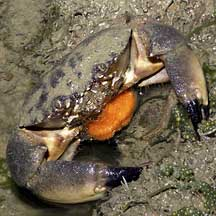
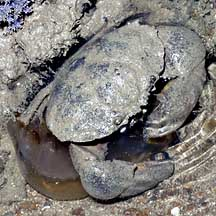
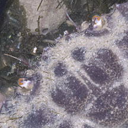
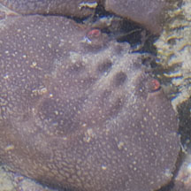

|
|
| crabs text index | photo index |
| Phylum Arthropoda > Subphylum Crustacea > Class Malacostraca > Order Decapoda > Brachyurans |
| Stone crabs Family Menippidae updated Dec 2019 Where seen? Stone crabs are commonly seen on our Northern shores, sheltering among stones, coral rubble, rubbish and other hiding places. Features: Body width 10-12cm, smaller ones also often seen. Large rounded body with large pincers. The common Stone crab (Myomenippe hardwickii) is identified by bright green eyes circled with red. The Maroon stone crab (Menippe rumphii) lacks such eyes and is usually plain maroon or red. Steady crab: When a stone is overturned, other crabs usually madly dash out helter skelter. The stone crab merely tucks its limbs under its body and remains motionless. In this way, predators overlook it as they focus instead on the more nervous crabs. Sometimes mistaken for Red egg crabs (Atergatis integerrimus), especially Stone crabs that are rather reddish. Here's more on how to tell apart big crabs with big pincers seen on the rocky shores and coral rubble. |
 With eggs Pulau Sekudu, Aug 05 |
 Eating a jellyfish Beting Bronok, May 06 |
| Some Stone crabs on Singapore shores |
|
 Green eyes ringed with red. |
 Eyes not green. |
| Family
Menippidae recorded for Singapore from Wee Y.C. and Peter K. L. Ng. 1994. A First Look at Biodiversity in Singapore
|
|
References
|